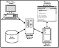
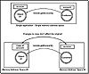

|
|
 |

|
Developing Java Enterprise Applications
by Stephen Asbury ; Scott R. Weiner
Wiley Computer Publishing, John Wiley & Sons, Inc.
ISBN: 0471327565 Pub Date: 02/01/99

|
CHAPTER 12
Overview of Distributed Objects
The next two chapters deal with distributed object solutions using a Java technology called Remote Method Invocation (RMI). This chapter provides you with a brief overview of widely accepted distributed object technologies. This overview is intended to provide you with the background necessary to understand the benefits and use of RMI. If you already have grounding in distributed objects, this chapter is a useful refresher. If you don’t feel you need a refresher, you might want to skip ahead to Chapter 13, “Introduction to Java RMI.”
Distributed Computing
Developing enterprise applications often requires integrating multiple processes and the applications handling them. These applications may be running on separate computers. In order to achieve communication between applications, a scheme for sending messages from one process to another must be developed.
Distributed computing refers to computer applications in which the application code, the data it works on, and the actual computations performed are spread across multiple computers. The goal is to distribute the heavy computing and network load that users put on an enterprise application by leveraging the processing power of multiple computers.
One of the benefits for creating a distributed application is that the design of one component can be used by several others. As the example in Figure 12.1 illustrates, you could create a credit card verification subsystem that is simultaneously used by a point-of-sales system in a retail store as well as an electronic commerce Web site.

Figure 12.1 A distributed computing example.
Rather than building the credit card verification component into every application that uses it, we would typically establish a distributed messaging protocol that allows messages to be sent from one application to another. In this way, the credit card application can be considered as just another network service that can be accessed and utilized by several applications.
Examples of messaging schemes that applications have used include:
- Sockets. The method of standard TCP sockets for communication between two processes requires the developer to write an extensive amount of communication code because sockets do not define high-level data structures, such as the notion of a credit card object. In addition, socket programming requires that you handle data loss and marshaling of the information being sent.
- Remote procedure calls (RPC). This higher-level mechanism handles some of the communication issues but still doesn’t provide high-level data structures, only a simple function calling mechanism. RPC is simply a library of function calls (typically implemented with a C interface) that handles the actual communication between two applications. You still have to handle most of the data type issues yourself. This means that your credit card object would have to be broken down into its raw elements such as credit card number, date, name, and so on. The elements would have to be reconstructed on the other side of the connection for processing.
Programmers have used many schemes, but most of these older strategies make the developer think too much about solving the network communication issues as opposed to solving critical business problems. This is an issue because it means that changing the behavior of the service provider or one of its clients can mean a drastic amount of coding to handle network communication issues such as network failure, data formats, and so on. This is a plumbing problem, and highly paid enterprise developers should be focused on more critical business process issues. As object-oriented programming grew in popularity, it became obvious that the inherent mapping between object modeling and business processes would be a natural fit. It wasn’t long before object designers began to look for a way to send these object encapsulations of business processes over the network. This was the beginning of distributed objects.
Distributed Objects
A distributed object mechanism allows objects implemented on one computer to send messages to objects running in another memory address space, typically across the network. In other words, if a standard mechanism could be developed so that an object developed in, say, Java could transparently send messages to an object on another computer as easily as it sends messages to an object in the same application, objects could truly bridge the gap between business processes and software development in a distributed application environment.
The number of hurdles in accomplishing this task is enormous. For instance, the designer of such a distributed object system would have to handle issues such as:
- Heterogeneous platforms. In a distributed object environment, it is reasonable to expect that the various software components and network services you want to access are running on different hardware platforms under various operating systems. The transmission mechanism for these distributed objects has to manage data format issues such as byte ordering.
- Location. In a distributed object environment, there must be some scheme for locating the object that will provide you the service. For example, how does the point-of-sales application locate the credit card verification object and the specific machine on which it is located?
- Memory management. Sending a message to an object that is actually in another address space adds several new issues to the object paradigm. For example, if you wanted to request a customer name from a remote object, how does the string representing the name get passed back to you? By reference? By value? It can’t truly be by reference, because references to a foreign address space have no meaning in your application. Figure 12.2 illustrates this concept. If the name is sent by value, what happens if the value changes? The original string won’t be updated, only the copy will be, so how would you have the original string updated? In addition, if you have a reference to a remote object, how does the remote object application “know” when it can delete or garbage-collect the object? The distributed object scheme would have to handle these issues and several others.

Figure 12.2 Accessing a remote object.
- Multiple languages. Unfortunately, no one computer language meets all application needs. This means that it is reasonable that distributed object services and their client applications could be written in different programming languages and therefore have completely different language concepts. For example, how does a Java application send messages to a C++ object when the C++ language supports multiple inheritance and the Java language doesn’t, or vice versa? The distributed object scheme should be able to perform language mappings. This way, a message sent from an application written in C++ could be interpreted and executed by a Java object running on another computer or in another address space on the same computer.
- Network communication. Object messages would have to be sent in such a way that the client application did not have to deal with the networking issues required to communicate with the object service it was connecting to. This means a mechanism is required to handle network protocols and network failure. For instance, when you send a message inside an application, you always expect the message to be received. In a distributed object scheme, due to hardware or software difficulties along the way, it is quite possible that the message will never reach its destination. Although it is impossible for any networking technology to completely hide the inherent issues in distributed computing, the more the technology can handle without programmer knowledge, the better.
- Persistence. Communicating with objects over a network also brings up the question of how to maintain a reference to the remote object so that later sessions with your client application are possible. Some global referencing scheme may be necessary.
- Standardization. Even if solutions to all these problems and the dozens of other issues that have emerged are found, the most pressing one is that of standards. If the distributed object scheme is not widely accepted, it has little value. After all, what difference does it make if we have a way of connecting applications and services together with a seamless object layer if third-party applications and vendors don’t support the mechanism? How useful is it to create a distributed object layer that no one supports? For a distributed object solution to truly benefit the industry, it must have the support of advocates and a standards body.
|


){kind=link}
){kind=link}
){kind=link}
){kind=link}